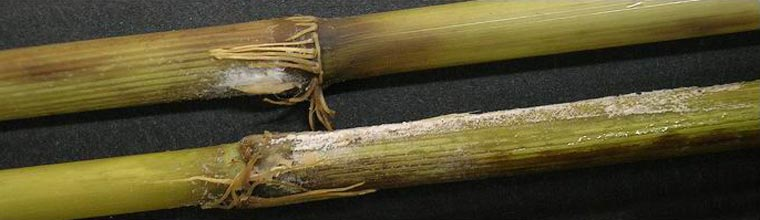

Bakanae 
What it does
Bakanae is a seedborne fungal disease.
The fungus infects plants through the roots or crowns. It then grows systemically within the plant.
Infected plants are abnormally tall with pale, thin leaves, produce fewer tillers, and produce only partially filled or empty grains.
Why and where it occurs
The disease occurs most frequently when infested seeds (i.e., seeds covered in fungal spores) are used, but also can occur when the pathogen is present on plant material or in the soil. It spreads through wind or water that carries the fungal spores from one plant to another.
Bakanae can also be transmitted during farm operations such as harvesting infected plants allowing fungal spores to spread to the healthy seeds, and soaking seeds in water that contains the fungus.
How to identify
- Check the seedbed for unhealthy looking seedlings. Infected seedlings have lesions on roots, and can die before transplanting or immediately after.
- Check for abnormal plants. Infected plants are several inches taller than normal plants. They are also thin, with yellowish green and pale green leaves.
- Check for white powdery growth at the base or on the lower portion of the infected plants.
- Check for roots growing from above-ground nodes on the stem.
However, not all infected plants exhibit the visible bakanae symptoms, sometimes they may be stunted or appear normal.
Early infection can cause seedlings to die at early tillering stage. Later infection results in plants that develop few tillers and have dry leaves. If the plants survive to maturity stage, they develop partially filled grains, sterile, or empty grains.
Why is it important
Crop losses caused by the disease may reach up to 20% in outbreak cases. In Japan, a 20−50% loss was observed. In India and Thailand, yield losses of 15% and 3.7% were reported, respectively.
How to manage
- Use clean seeds to minimize the occurrence of the disease
- Use salt water to separate lightweight, infected seeds during soaking
- Use fungicides as seed treatments
Because the disease is commonly spread through spores on the surface of the seed, applying a fungicide containing benomyl or benomyl-t (at 1-2% of seed weight) for dry seed coating to treat infested seed can be effective. Soaking seed in a fungicide solution of 1:1000 for one hour or 1:2000 for five hours has also been shown to be useful. Avoid repeated applications of benomyl since the fungus can develop resistance to this treatment.
In cases where resistance to benomyl occurs, use a fungicide that contains triflumizole, propiconazole, prochloraz or a combination of thiram + benomyl.
-
Content expert: Jo Catindig (email: j.catindig@irri.org) and Bryce Blackman (email: b.blackman@irri.orgp).
Disclaimer: All information are taken from http://www.knowledgebank.irri.org/